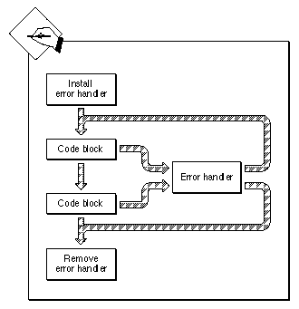

Legacy Document
Important: The information in this document is obsolete and should not be used for new development.
Important: The information in this document is obsolete and should not be used for new development.


Installing an Error, Warning, or Notice Handler
You can use theGXSetUserGraphicsError,GXSetUserGraphicsWarning, andGXSetUserGraphicsNoticefunctions to install an application-defined function that you want to call whenever an error, warning, or notice occurs. QuickDraw GX will pass this function the error, warning, or notice when it is generated. Your function can then respond accordingly. You may use thereferenceargument to pass an associatedlongvalue parameter to your function. If you want to disable your handler, you just passnil.Your application can then take advantage of these errors. For example, QuickDraw GX may post an error indicating that your application has run out of memory or has tried to use a font that is not installed. As a result, your application may be able to recommend corrective action via the application-defined error handling function and the application's human interface.
You can use the
GXGetUserGraphicsError,GXGetUserGraphicsWarning, andGXGetUserGraphicsNoticefunctions to obtain the application-defined handler functions that have been previously installed byGXSetUserGraphicsError,GXSetUserGraphicsWarning, andSetUserGraphicsNotices. These functions returnnilif no function has been installed.You usually install handlers at the beginning of your application code. You can install error, warning, and notice handlers before any graphics operations have occurred and before the
GXEnterGraphicsfunction has been called. If you do, QuickDraw GX will call theGXEnterGraphicsfunction for you. In contrast, you can't install error, warning, and notice handlers before calling theGXNewGraphicsClientfunction.Alternatively, you may selectively enable and disable error, warning, and notice handlers at different sections of the application code. Figure 3-5 shows how an error handler can be enabled and disabled within the application. This is an effective method for ignoring errors, warnings, and notices, analogous to the use of the
GXIgnoreGraphicsError,GXIgnoreGraphicsWarning, andGXIgnoreGraphicsNoticefunctions.Figure 3-5 Enabling and disabling an error handler

The handler should respond to the problems that occur during typical application scenarios. A friendly application should let the user know when it is taking action in response to errors and warnings that have occurred. For example, if an application runs out of memory, it may let the user know that it is out of memory and that it is responding in a particular manner to alleviate the problem. If it cannot solve the problem, it may need to notify the user that it needs to abort processing. Such an application would need to install an error handler that looks for
out_of_memoryerrors.In general, in the non-debugging version of your application, the handler might be relatively simple. If the handler doesn't have a response to an error or warning, it should just return and continue execution.
In contrast, the debugging version of the handler may be relatively complex to accommodate special error, warning, and notice conditions. In general, you should stop and print the errors, warnings, and notices whenever a problem occurs.
An application can have more than one error handler. A simple application might have just one error handler to handle specific problems. However, a more complicated application may have multiple error handlers. For example, an application might have one error handler that takes care of memory problems and another error handler for other types of errors. The special error handler may be installed only when a particular type of processing is to occur, like animation or QuickTime movies.